仿生臂振动抑制
主要策略：避开机械臂模态，补偿关节柔性
1. 振动原因
1.1 结构柔性
连杆、臂身、外壳这些“硬”的部分产生的结构连杆弯曲、拉伸共振，与机械臂的姿态相关。
机械臂完全伸直时等效刚度最小，模态频率最低，最容易抖，一般称为机械臂的模态。
系统模态是控制的上限频率。
1.2 关节柔性
由关节的减速机、传动轴、轴承这些“软”的部分产生的关节扭转共振。
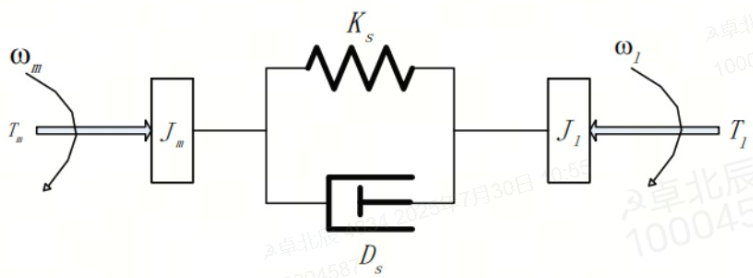
按照双惯量模型建模分析，末端闭环容易激发反共振频率。
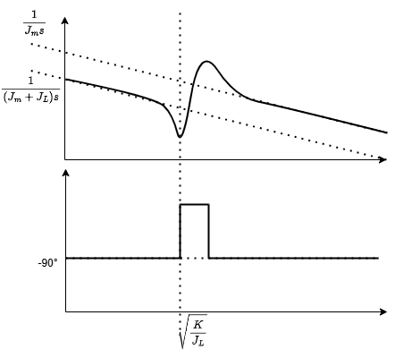
2. 振动抑制策略分类
2.1 关节特性
原因：关节刚度差，而且阻尼较小，容易产生振动。
策略：双编码器（imu和轴端编码器）施加主动阻尼。
2.2 伺服参数
原因：伺服刚度大，阻尼小或者积分增益过大
策略：PPI参数调节。
2.3 负载扰动
原因：对于机器人，负载受到惯性力、科氏力，与环境接触
策略：MCG力矩前馈，EKO补偿。环境接触振动，阻抗增益匹配。
2.4 输入指令
原因：轨迹规划不平滑，容易产生振动
策略：轨迹规划，指令滤波（低通，均值，陷波，Input Shaping）
2.5 非线性摩擦力
原因：低速时粘滑摩擦导致爬行
策略：观测器，摩擦补偿
2.6 周期扰动
原因：频率与速度成正比，如机械缺陷，编码器栅距波动，齿槽转矩波动，谐波减速机
策略：难以解决，一般需要解决振动源
2.7 固有频率共振
原因：机械、电磁固有模态共振，表现为与速度无关的单频率共振
策略：加陷波器等。
3. 抑制振动方案
3.1 双编码器主动阻尼
优点：增加关节端阻尼
缺点：增益过大可能导致电机端振动
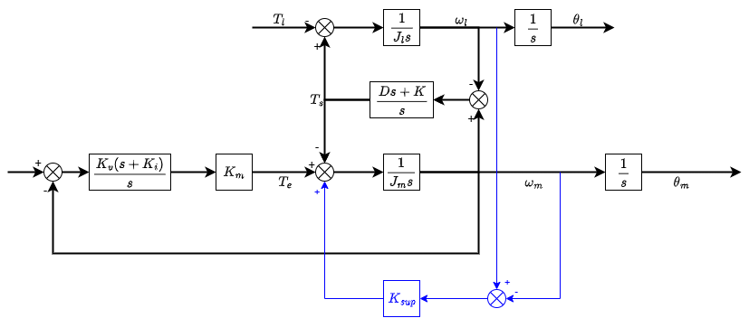
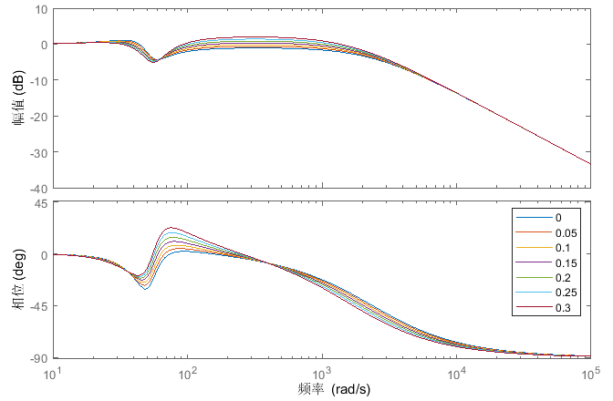
3.2 PPI-EKO调谐（万工智在研究）
使用启发式算法（粒子群，遗传等），调节伺服参数，以及柔性补偿参数。
采样：位置指令，位置反馈，电流指令，IMU末端最大线加速度
指标：
电流fft归一化最大值：判断系统是否稳定，一般过大导致，现象是异响和啸叫。电流波动大有时会误报警碰撞。
匀速位置偏差：斜坡稳态位置偏差，与带宽成反比。
超调负调：第一次超过稳态反馈的超调量和负调量。
整定时间：误差稳定在1000个脉冲内的时间。
ITAE：位置误差对于时间的矩
3.2.1 PPI调谐：伺服增益调谐（已完成）
控制框图：
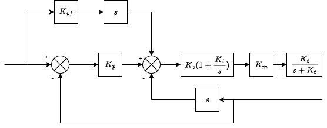
双惯量PPI参数影响：
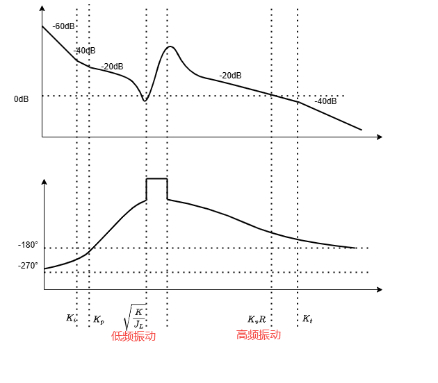
惯量影响：需要变惯量，保证裕度不变
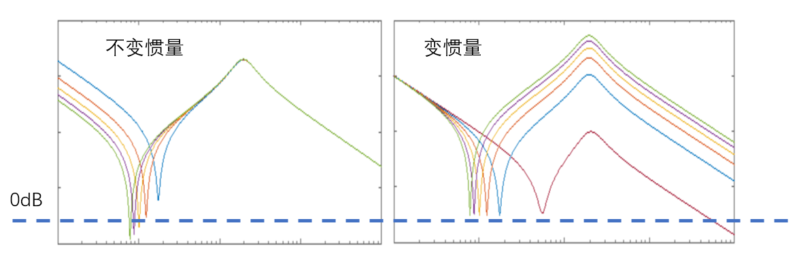
3.2.2 EKO补偿：末端扰动的柔性补偿（包括重力补偿）
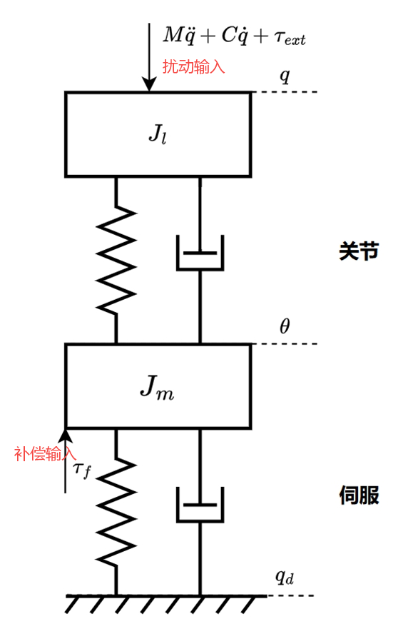
由于末端扰动和电机转矩输入间隔着关节柔性，需要进行补偿：
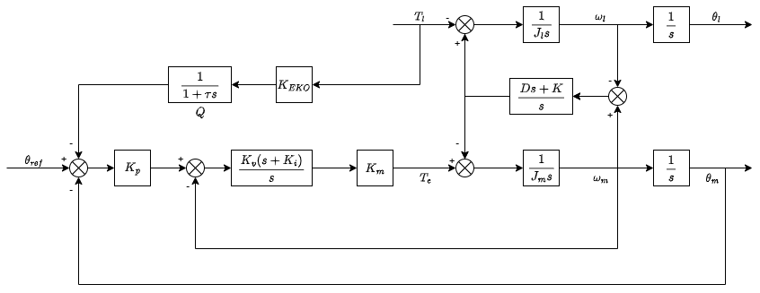
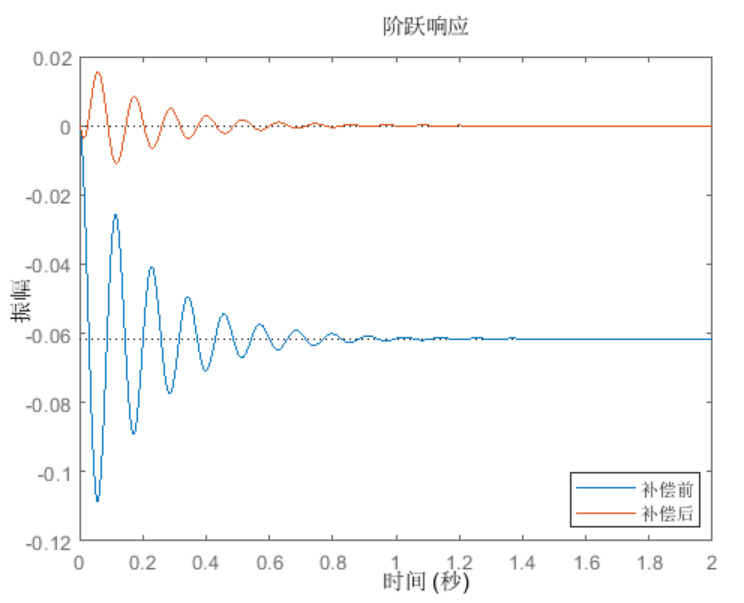
3.3 转矩闭环（关节传感器机器人都在做）
四环控制框图：位置环-速度环-转矩环-电流环
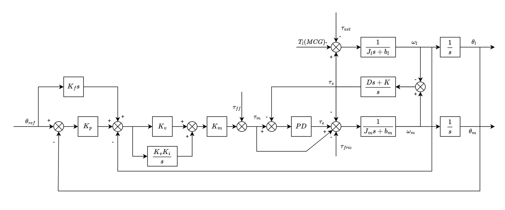
相当于完全消除关节柔性。
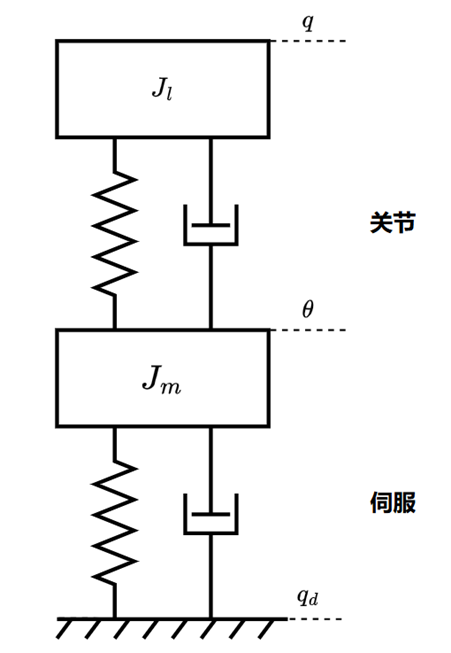
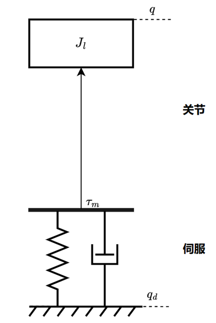
双编码器偏差与力矩传感器，可以做卡尔曼滤波做传感器融合：
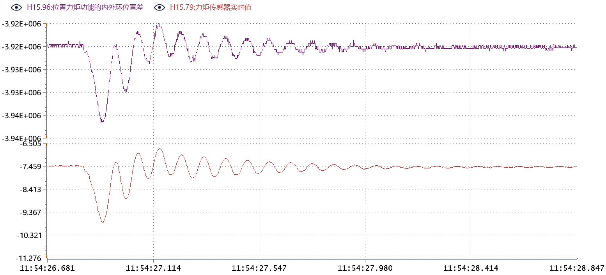
3.4 观测器（DOB，ESO）（好的协作臂有，我们没有的）
削弱双惯量模型的峰和谷，补偿摩擦力和扰动